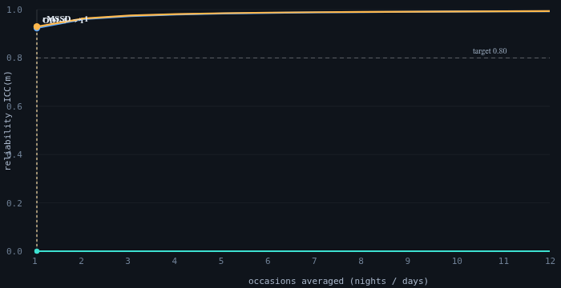
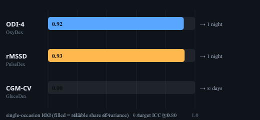
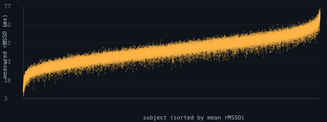

OxyDex · PulseDex · GlucoDex nodes, Tepna physiological-signal suite
Background. A single night (or day) of a wearable physiological signal is one noisy draw of a person's true physiology. Before any single-occasion metric can be read as a stable individual trait — for screening, for tracking, for cohort comparison — we need to know how reliably it separates people, and therefore how many occasions a recording must span. Methods. For each stable (flat-arc) synthetic patient in the suite's 1–12-night longitudinal lane we measured three single-signal metrics per occasion with the production detectors: ODI-4 (OxyDex, per night), rMSSD (PulseDex, per night), and CGM coefficient-of-variation (GlucoDex, per day). One-way random-effects ICC(1,1) decomposes the variance into between-subject vs occasion-to-occasion; the Spearman–Brown prophecy converts the single-occasion ICC into the minimum number of occasions needed to reach a reliability target. Results. rMSSD was a reliable individual trait from a single night (ICC₁ 0.93; already at ICC≥0.90 at one occasion). ODI-4 was reliable but slightly noisier (ICC₁ 0.75; ICC≥0.80 at two nights, ICC≥0.90 at four) — down from the earlier v1.6-cohort draft (0.89) after the generator's AHI-ceiling revision compressed the between-subject apnea spread. Daily CGM-CV, by contrast, showed negligible between-subject variance in the stable cohort (ICC₁≈0): day-to-day fluctuation swamped person-to-person differences, so no number of days made it a reliable individual trait. Conclusion. A reliable individual rMSSD needs a single night and ODI-4 two to four nights; daily glycemic variability is an occasion-level state, not a one-number trait, and must be summarized differently. This is synthetic ground truth: it certifies the reliability structure of the pipeline and recovers the planted variance ratio — it does not establish real-world clinical reliability, which requires a labelled repeated-measures cohort.
Keywords: test–retest reliability · intraclass correlation · Spearman–Brown · oximetry · heart-rate variability · continuous glucose monitoring · wearables · minimum recording length
A wearable reports one number per night (or per day), and people treat it as a fixed fact about themselves. But any single night is one noisy sample — partly the real you, partly just how that particular night went. The practical question: how many nights do you need before the number really describes the person, not the night?
Using simulated stable people (whose true physiology doesn't change) and the real app's detectors, we measured how much of each number's variation separates people versus separates nights. Two metrics differ in degree: the heart-rhythm number (rMSSD) is mostly about the person, so one night is already enough. The apnea index (ODI-4) is also mostly about the person but a bit noisier night-to-night, so it takes two to four nights to be solid. The glucose-variability number is the opposite: it changes so much day to day that it mostly describes the day, not the person — so no amount of extra days turns it into a reliable personal trait; it should be summarized differently. (Simulation: this proves the method and the software's variance structure, not a clinical reliability claim.)
Consumer and clinical wearables increasingly report a single headline number per recording — an overnight desaturation index, a heart-rate-variability summary, a glycemic-variability coefficient — and users and clinicians treat that number as a property of the person. But every recording is a sample: it mixes the person's stable physiology with the night-to-night (or day-to-day) variation of biology, behavior, and the detector itself. If the occasion-to-occasion swing is large relative to the spread between people, a one-night number tells you more about that night than about that person, and a screening cut-point applied to it will mostly sort noise.
The standard instrument for this question is test–retest reliability. The intraclass correlation ICC(1,1) is the fraction of total variance that is between-subject (the "reliable" share); the Spearman–Brown prophecy then says how that reliability grows when several occasions are averaged, and inverts to the fewest occasions needed to clear a target. We ask the practical version of the question directly: how many nights (or days) does each Tepna metric need to be a reliable individual trait? We answer it for three single-signal metrics measured by their production detectors, on stable synthetic patients where the between/within variance ratio is known by construction.
Subjects are the flat-arc patients of the suite's 1–12-night longitudinal lane: each has a single stable latent physiology (no planted trend, treatment response, or drift), so within-subject spread across occasions is genuine occasion-to-occasion biology plus detector noise rather than a designed trajectory. We scan profiles for flat-arc subjects with at least the configured minimum number of occasions (default 5) and measure every occasion. The run reported here covers 6,000 sampled subjects (generator synth-gen 2.1 / cohort-gen 1.9); per-metric subject counts differ by device coverage (CGM is modeled as continuous OTC wear, so its coverage is now close to oximetry/RR rather than a small minority) and by how many subjects contribute enough valid occasions of each signal (Table 1).
Each occasion is scored by the unmodified production detector, run in its own Web-Worker realm (OxyDex must be isolated because it collides with PulseDex on bare globals; the lean worker pairs PulseDex+GlucoDex, which coexist): ODI-4 from oxydex-dsp.js → processNight (per night), time-domain rMSSD from pulsedex-dsp.js (per night), and the glucose coefficient of variation from glucodex-dsp.js → analyze (per day, after splitting the continuous CGM stream into calendar days on the floating wall-clock). No detector parameters were altered. Timestamps follow the suite Clock Contract so day-splitting and ordering are viewer-timezone-independent.
For each metric we form the ragged set of per-subject occasion vectors (subjects with ≥2 occasions) and estimate the one-way random-effects intraclass correlation by ANOVA:
where n₀ is the average occasions-per-subject. The single-occasion ICC₁ is the reliability of one night/day; the Spearman–Brown prophecy gives the reliability of an average of m occasions and the minimum m for a target:
As a non-circular check that the detector preserves (rather than manufactures) the reliability structure, the same ANOVA is run on the planted latent targets (planted AHI for ODI, planted rMSSD) and compared against the measured ICC.
| Metric | Node | Occasion | Subjects | Occasions | ICC₁ | Within-CV | n for ICC≥.80 | n for ICC≥.90 |
|---|---|---|---|---|---|---|---|---|
| ODI-4 | OxyDex | night | 5394 | 44256 | 0.745 | 39% | 2 | 4 |
| rMSSD | PulseDex | night | 5275 | 43244 | 0.929 | 7% | 1 | 1 |
| CGM-CV | GlucoDex | day | 4377 | 35013 | 0.00 | 17% | ∞ | ∞ |
rMSSD is a reliable individual trait from a single occasion (ICC₁ 0.93 — ~93% of the variance separates people rather than nights — already at ICC≥0.90 from one night, with a modest occasion-to-occasion noise of ≈2.7 ms, a 7% within-subject coefficient of variation). ODI-4 is also trait-like but noisier: ICC₁ 0.75 means ~75% of its variance is between-subject, so a single night clears neither the 0.80 nor the 0.90 bar — it reaches ICC≥0.80 at two nights and ICC≥0.90 at four (occasion SD ≈0.6 events/h, but a large 39% within-subject CV against a compressed between-subject apnea spread).

nights-icc-analysis.html, synth-gen 2.1 / cohort-gen 1.9): reliability of an m-occasion average versus the number of occasions. rMSSD (amber) starts at 0.93 at a single occasion and is already past the 0.90 target; ODI-4 (blue) starts at 0.75 and clears the 0.80 target at two occasions; daily CGM-CV (teal) sits flat on the axis (ICC₁≈0), so averaging more days never lifts it. Dark theme is the tool's native rendering.

Daily CGM-CV behaved qualitatively differently. In the stable cohort its between-subject variance was negligible (ICC₁≈0): stable patients' days look alike in CV, while each person's CV swings day to day (within-subject CV ≈17%). When occasion-to-occasion variation dominates and person-to-person variation does not, Spearman–Brown returns no finite recording length — averaging more days cannot manufacture between-subject signal that is not there. The practical reading is not "CGM-CV is useless" but "daily CGM-CV is an occasion-level state, not a stable one-number individual trait": it should be summarized over a window or paired with its driver (meals, activity, the autonomic context) rather than reported as a single reliable number.
| Metric | Measured ICC₁ | Latent ICC₁ |
|---|---|---|
| ODI-4 (OxyDex) | 0.75 | 0.94 |
| rMSSD (PulseDex) | 0.93 | 0.93 |
Running the same ANOVA on the planted latent targets recovers the reliability structure with an informative gap: rMSSD is reproduced almost exactly (measured 0.93 vs latent 0.93), while ODI-4's measured ICC (0.75) sits well below its latent ceiling (0.94). The planted apnea burden is highly between-subject reliable, but the oximetric ODI-4 readout adds enough occasion-level noise — against the now-compressed between-subject apnea spread — to pull the measured single-night reliability down to 0.75. The detector does not invent the between-subject separation (it under-recovers it, if anything), so the reliability ordering remains a property of the physiology and the detector, not an artifact of the estimator.
The metrics split cleanly into two regimes. rMSSD and ODI-4 are trait-like: most of their variance is between people, so a single night is already informative for rMSSD (and a second night mainly buys precision), while ODI-4 — noisier since the AHI-ceiling revision — needs two to four nights to be solid. Daily CGM-CV is state-like: its variance lives within the person across days, so it indexes the day, not the person, and needs a window-level summary or a coupling model to become a stable descriptor. This distinction matters for any downstream use — a screening cut-point, a "your number changed" alert, a cohort covariate — because applying a trait framing to a state-like metric sorts mostly noise.
nights-icc-analysis.html → set subjects / min occasions / target ICC → "Run cohort". Tables 1–2 and Figure 1 populate live; the target-ICC slider re-derives the minimum recording length without re-measuring. Export nights-icc-results.csv, nights-icc-stats.json, nights-icc-figures.png.oxydex-dsp.js (ODI-4 = processNight().odi4.rate), pulsedex-dsp.js (rMSSD), glucodex-dsp.js (CGM-CV, day-split), each run in its own cohort-worker.js Web-Worker realm (two pools: OxyDex, and lean PulseDex+GlucoDex).cohort-gen.js + synth-gen.js (1–12-night longitudinal lane).The ICC's precision is governed by the number of subjects (and, secondarily, occasions per subject); its confidence interval narrows as ~1/√N_subjects. A handful of subjects gives a point ICC but a wide interval; thousands pin it to the second decimal. The qualitative split — ODI-4/rMSSD trait-like, CGM-CV state-like — is unmistakable even at small N, because the ICCs sit near opposite ends (≈0.9 vs ≈0).
| Tier | Subjects | What it buys |
|---|---|---|
| Minimum (acceptable) | ~200 | ICC point estimates to ≈±0.03 and the minimum-occasions answer (1–2 nights) are stable; the trait-vs-state split is obvious. Below ~50 the ICC CI is too wide to quote. |
| Recommended | ~3,000 | ICCs to ≈±0.01, smooth Spearman–Brown curves and per-subject spread plots. Comfortable publication precision. |
| This run | 6,000 | Per-metric n = 4,377–5,394 subjects (synth-gen 2.1 / cohort-gen 1.9); ICCs pinned to ≈±0.005. |
| Diminishing returns | > ~5,000 | Beyond here the ICC CIs are already <±0.01; more subjects don't change which regime a metric is in. Adding more occasions per subject (not subjects) is what would refine the minimum-recording-length estimate further. |
Practical reading: ~200 subjects to answer “how many nights?” reliably, ~3,000 for tight published ICCs; past ~5,000 the marginal subject adds little. Note this pilot's lever is subjects × occasions — to sharpen the recording-length recommendation specifically, raise the minimum-occasions setting rather than the subject count.
CLAUDE.md (Clock Contract, evidence-grade system), COHORT-VALIDATION-BRIEF.md, SYNTHETIC-CORPUS-README.md, Tepna suite.